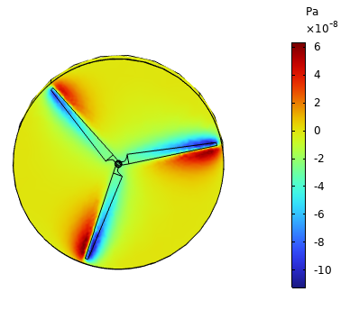
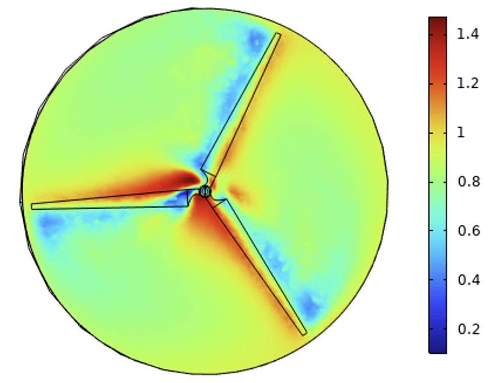
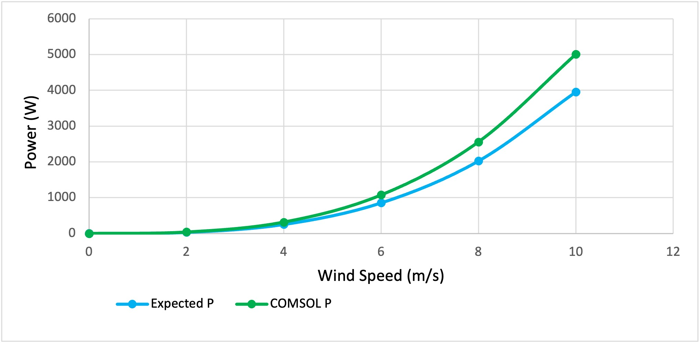
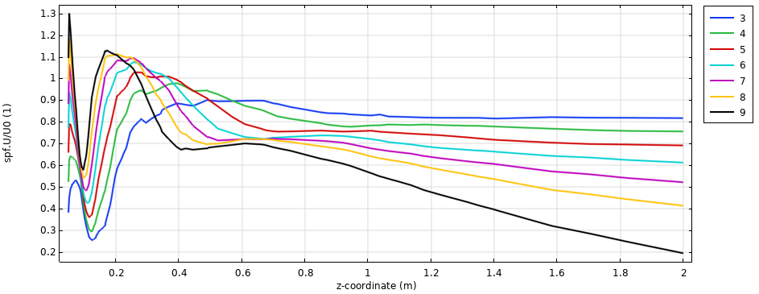

In this project I modeled airflow around a horizontal axis wind turbine using COMSOL CFD software. A scaled down turbine with a 1.434m diameter was simulated using a rotating mesh domain to analyze how blade rotation generates lift and torque, and how it affects downstream airflow.
Wind turbines are often build on large wind farms, with the wake left behind one affecting the others, reducing the energy available to the next. Understanding how blade rotation influences downstream flow is critical for optimizing turbine spacing in a wind farm. This project sought to model that behavior by examining how wind speed and rotor speed affect flow patterns, torque, and power output under realistic operating conditions
The simulation used a rotating cylindrical domain surrounding the turbine blades, governed by the 3D Navier-Stokes equations for incompressible laminar flow. Rotor speed was tied to wind speed through a constant tip-to-speed ratio of 7, similar to real turbine control. A mesh study comparing coarse, normal, and fine mesh resolutions led to the selection of a normal mesh, which produced accurate results near the blade edges without using too much computational power. Two parametric studies were also run, one varying wind speed from 0.0001 to 10 m/s, and another varying TSR from 3 to 9 to isolate the effect of rotor speed on wake and energy capture
The pressure distribution across the blade surfaces shows low pressure on the leading edge where flow accelerates and localized pressure drops at the blade tips, with the pressure differential increasing with higher TSR values. The velocity distribution confirms this behavior, with air slowing upstream of the turbine before accelerating around the blades. The bottom left plot shows how turbine power output scaled cubically with wind speed, matching the theoretical Betz limit formula but decreasing in accuracy as wind speed increased due to increased losses. As shown in the normalized wake velocity plot, increasing TSR produced stronger lift and more power, but at TSR = 9 the downstream wake degrades to just 20% of wind speed while moderate TSR values recover much more quickly, offering the best balance between individual turbine power and wind farm efficiency.



